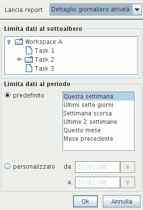

I report
Per generare report accedere al menù |File|Stampa|.
Viene visualizzato il Pannello dei report dal quale è possibile:
Dopo aver impostato impostato le opzioni desiderate, premere
il pulsante Conferma per visualizzare l'anteprima del
report.

Illustration
1: Il pannello di lancio report
Dalla finestra di anteprima è possibile navigare nelle pagine
del report, lanciare una stampa, oppure salvare il report nei
formati PDF, RTF, HTML , XLS, CSV o XML.
Scegliere
il report da lanciare
Sono disponibili due report:
il dettaglio giornaliero attività:
mostra l'elenco delle azioni raggruppate per giorno e per
attività, ordinate per giorno, nome attività e ora di inizio.
E' utile per rendicontare o controllare il lavorato giornaliero.
la lista giornaliera azioni: mostra
l'elenco delle azioni raggruppate per giorno e ordinate per
giorno e ora di inizio. Può servire per controllare se
nell'arco della giornata sono rimasti dei “buchi”.
Scegliere
l'azione di lancio
E' possibile scegliere fra una delle seguenti opzioni:
visualizzare l'anteprima del report (è la scelta
predefinita)
esportare i contenuti del report nei vari formati
disponibili, come csv, html, xls o pdf.
Limitare
il report ad un sottoalbero
Selezionando un'attività dell'albero visualizzato nel
pannello dei report , i dati del report vengono automaticamente
limitati all'attività selezionata ed al suo sotto-albero.
Limitare il report ad un periodo temporale
Per limitare il report ai dati relativi ad un periodo
temporale, scegliere uno dei predefiniti, oppure impostare una
data di inizio e/o di fine.
Il report lanciato conterrà solamente i dati appartenenti al
periodo specificato.
|